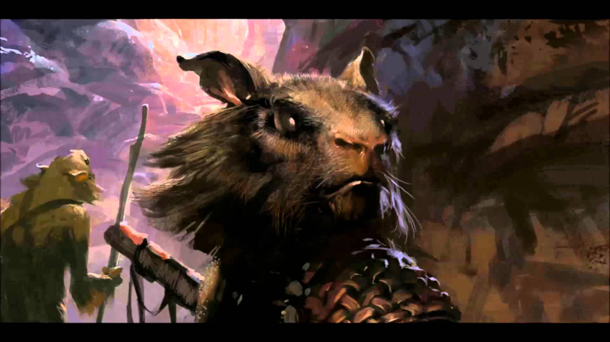
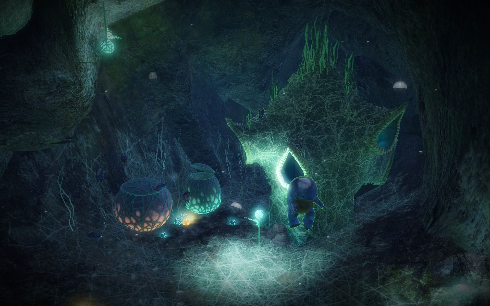

Poradniki | Misje Gildiowe
Ogółem o misjach
Misje gildiowe to zadania pozwalające zdobyć uczestnikom atrakcyjne nagrody, a gildii reputację niezbędną do rozbudowy guildhalla. W naszej gildii odbywają się w piątki o godzinie 22 : 00 (czasem z drobnym poślizgiem :) ).
Skład gildiowiczów pod dowództwem prowadzącego misje comandera wykonuje konkretne zadania, które dzielą się na kilka grup:
PvE
W tej grupie eventów wyróżniamy:
Bounty
W zależności od trudności jest to szukanie konkretnego moba/mobów (oznaczonych gwiazdą szeryfa) na mapach Tyrii, na poziomie easy jest to jeden losowy potworek, na medium trzy potworki, zaś na hardzie 5 sztuk. W tej misji w zależności od trudności muszą zostać pokonane wszystkie wylosowane moby – czas na wykonanie misji 15 minut.

Race
Race to tor z przeszkodami na czas na losowej mapie pod postacią stworka (np. pająk, niedźwiadek, kurczak – to w co się zmieniamy jest zależne od wylosowanej opcji). Każde zwierzę ma uniaktowe umiejętności pomagające nam dotrzeć do celu, a także wspólną umiejętność wykrywania pułapek. W zależności od trudności danego eventu ramy czasowe przedstawiają się następująco:
- easy: 31 minut
- medium: 21 minut
- hard: 11 minut.
Trek
Trek to wyznaczone punkty rozrzucone po mapach Tyrii, które musimy odnaleź. Wybierane są losowo spośród puli 180 miejsc. Tak jak w poprzednich misjach są trzy poziomy trudności na które mamy różne ramy czasowe są to : easy 5 punktów w 15 minut, medium 15 punktów w 17 minut oraz hard 30 punktów w 20 minut.

Challenge
Challenge to misja w której skład musi wykonać konkretne zadanie (zależne od wylosowanej opcji), może to być przykładowo obrona konkretnego obszaru przed grupami przeciwników, czy eskortowanie quagganków i bronienie ich podczas przeprawy do bezpiecznego punktu.

Jumping Puzzle
Guild Puzzle to losowe (jedne z trzech) puzzle do wykonania – wymagające współpracy i koordynacji czasowej działań uczestników polegająca na szybkim i sprawnym przekazywaniu sobie informacji tak aby zmieścić się danym w limicie czasu (na całą instancję mamy określony czas, ale także nieraz na poszczególne części). Zależnie od wylosowanej opcji mamy 30 (Angvar's Trove) lub 20 minut (Langmar Estate i Proxemics Lab).
PvP
Te misje sprowadzają się do uzyskania odpowiedniej ilości rank pointów w określonym czasie. Misja wykonywana przez nas okazjonalnie.
WvW
Te misje sprowadzają się do wykonania odpowiednich czynności związanych z WvW X razy (np. przejąć X razy supply camp). Wszystkie przejęcia muszą być dokonane na jednym serwerze. Te misje też wykonujemy okazjonalnie.
Na koniec jedna uwaga. Ponieważ na dzień dzisiejszy gildia nie potrzebuje już punktów reputacji (osiągneliśmy maksymalny poziom ulepszeń, z których korzystamy) misje wykonujemy jedynie w zakresie do uzyskania nagród indywidualnych. Oznacza to, że:
- w przypadku race - musi go ukończyć tylko jedna osoba, a pozostali wziąć udział. Wystarczy więc zmienić się w zwierzaka, przejść przez jeden czy dwa checkpointy i pomagać wyznaczonej osobie czyszcząc trasę
- w przypadku treka szukamy tylko jednego punktu. Żeby zaliczyło misję musimy stać blisko punktu. UWAGA: Nie bądź egoistą. Nie wciskaj punktu nim wszyscy nie dojdą do celu (a najlepiej w ogóle nie wciskaj, zrobi to wyznaczona osoba, a Ty dostaniesz nagrodą o ile tylko będziesz w pobliżu.